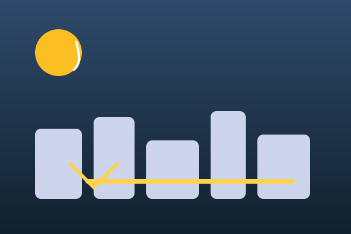
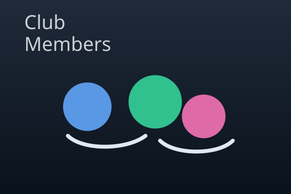
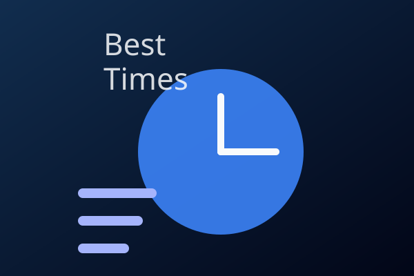
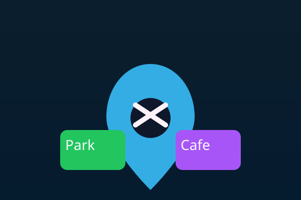
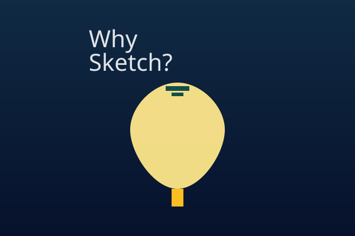

What is Urban Sketching?
Urban sketching is the practice of drawing on location in cities and towns. It mixes observation, creativity, and a little bit of adventure as you capture scenes from the streets, cafés, parks, and architecture around you.
Rather than waiting until you get home, the idea is to record a moment as it happens: the way light hits a building facade, an interesting shadow, or the bustling energy of a market. Every sketch becomes a visual journal entry.

Prompt used to create the image: “Stylized vector illustration of a city skyline with a warm sunset palette, minimal line work, and a sketchbook vibe.”
| Why people sketch | Outcome |
|---|---|
| To remember a place | A visual journal entry to revisit later |
| To improve observation skills | Sharper detail and faster sketching |
| To enjoy a creative break | Reduced stress and relaxed focus |
Who is the Urban Sketching Club for?
This club is for anyone who likes to draw and wants an excuse to explore the city. Beginners can bring a pencil and a notebook, while experienced artists can experiment with ink washes and watercolor.

Prompt used to create the image: “Colorful vector illustration of a small group of diverse people sketching together outdoors, friendly atmosphere, soft lighting.”
Club roles
- Field coordinator: Chooses safe locations and checks weather.
- Editor: Curates weekly sketch book and shares highlights.
- New member mentor: Helps newcomers set up materials and gives quick tips.
Everyone is welcome; you don’t need professional tools—just bring curiosity and a willingness to sit somewhere new.
When should you sketch?
Urban sketching works best when light is interesting and the streets have character. Early mornings and late afternoons are often ideal because the shadows stretch and the air feels crisp.

Prompt used to create the image: “Vector illustration of a clock showing morning and late afternoon, with a calm, pastel color palette and sketchbook feel.”
Suggested schedule
- Weekends: 10:00–12:00 for relaxed park scenes.
- Weekdays: 17:30–19:00 for city streets in golden light.
- Any day: 30‑minute “sketch sprint” for quick practice.
Flexibility helps—if rain hits, sketch indoor cafes or markets instead of canceling.
Where do we sketch?
The best spots are those with interesting shapes and textures: cafés, plazas, bridges, and old neighborhoods. Aim for locations where you can sit comfortably for 20–40 minutes.

Prompt used to create the image: “Vector icon set showing a map pin, sketchbook, and café sign, with a friendly modern flat style.”
| Location type | Why it works |
|---|---|
| Waterfront promenade | Long perspective lines and changing reflections. |
| Cultural district | Architectural details and vibrant street life. |
| Botanical garden | Plants, textures, and a calm atmosphere. |
We often rotate locations so everyone can suggest a favorite spot.
How to get started
Urban sketching is easy to start with a few simple tools: a sketchbook, a pen or pencil, and the willingness to look closely. The “how” is more about your process than your gear.
Prompt used to create the image: “Vector illustration of a sketchbook open with a pencil and pen, minimal color palette, modern flat design.”
Starter checklist
- Notebook (A5–A4) with 160–200gsm paper.
- Black fineliner and a mechanical pencil.
- Small water brush or set of watercolor pans (optional).
Don’t worry about “perfect” drawings—ask yourself what made you want to sketch that spot in the first place.
Why sketching matters
Sketching in public slows you down. It trains your eye, helps you notice patterns, and encourages a mindful connection with where you are. It also gives you a library of memories you can revisit anytime.

Prompt used to create the image: “Vector lightbulb icon with warm glow and abstract shapes, representing inspiration and creative spark.”
Benefits
- Improved hand‑eye coordination and drawing speed.
- Stronger memory and sense of place.
- Calm focus and a creative ritual for busy weeks.
Sketching can be a daily habit or a weekend hobby; the biggest win is staying curious.
AI Prompts (for images)
All illustrations on this page were made using a simple [AI image generator] prompt style. The prompts below describe the mood and composition to keep the illustration style consistent.
- What: “Stylized vector illustration of a city skyline with a warm sunset palette, minimal line work, and a sketchbook vibe.”
- Who: “Colorful vector illustration of a small group of diverse people sketching together outdoors, friendly atmosphere, soft lighting.”
- When: “Vector illustration of a clock showing morning and late afternoon, with a calm, pastel color palette and sketchbook feel.”
- Where: “Vector icon set showing a map pin, sketchbook, and café sign, with a friendly modern flat style.”
- How: “Vector illustration of a sketchbook open with a pencil and pen, minimal color palette, modern flat design.”
- Why: “Vector lightbulb icon with warm glow and abstract shapes, representing inspiration and creative spark.”
Model used: imaginary vector-style generator (the prompts were designed to be clear and consistent for a flat illustration style).